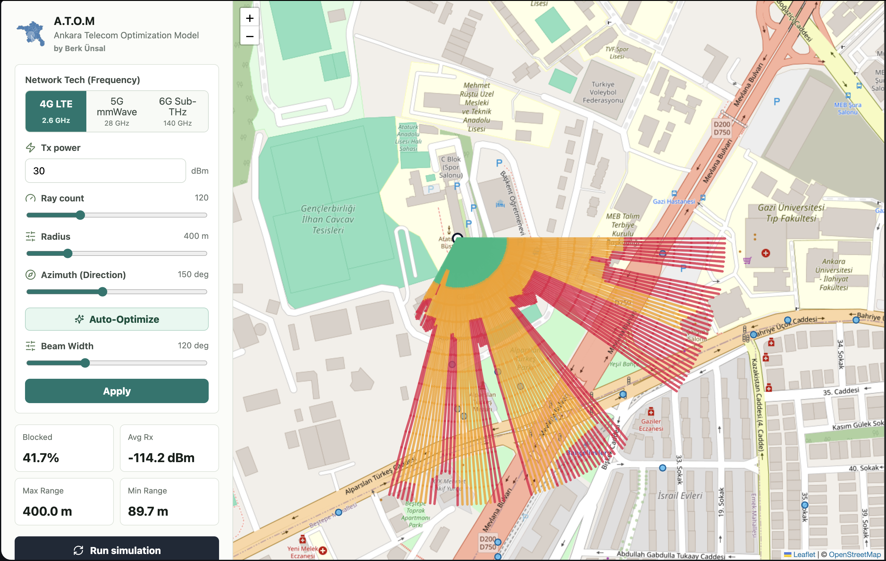
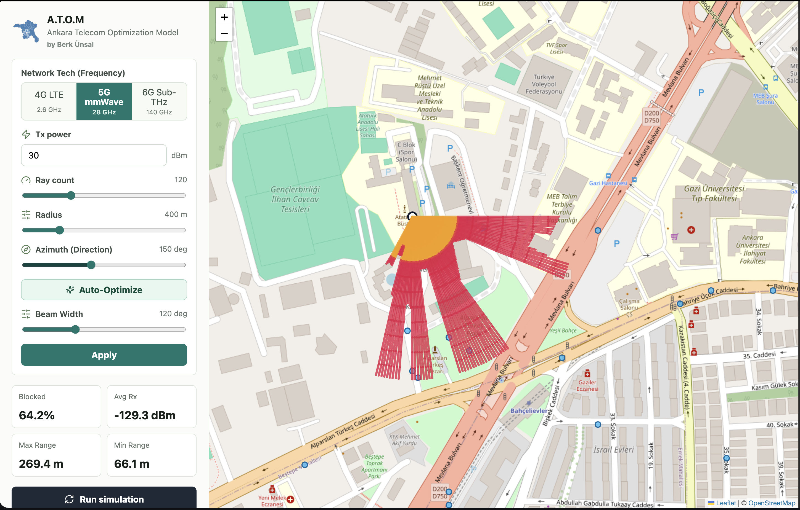
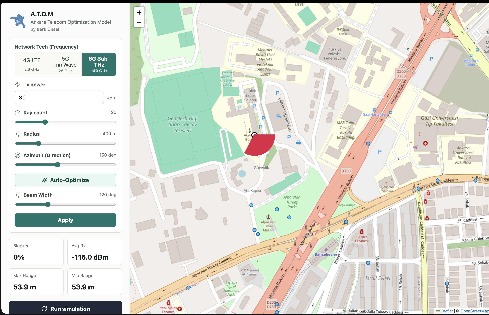
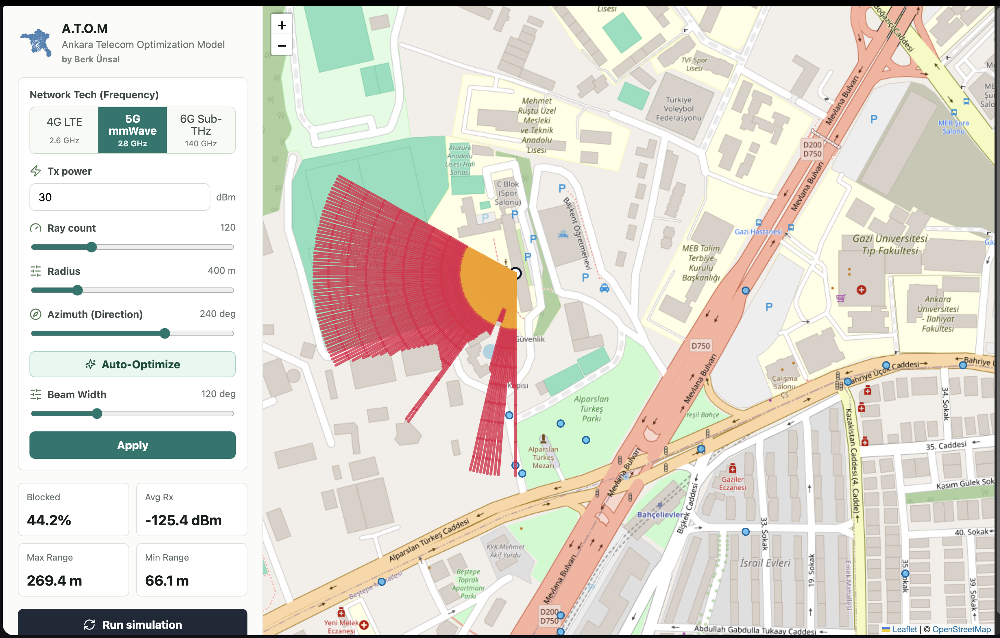

Reading Propagation Maps
How to interpret sector rays, frequency-dependent attenuation, coverage evidence, and the current map layers.
A.T.O.M visualizes deterministic RF planning estimates across frequency bands using Ankara's urban topology. The images are model outputs, not measured coverage maps.
Stored band illustrations
The images below illustrate band-dependent model outputs. Their complete request/model lineage is not embedded in the images, so they are not current benchmark or validation evidence. For a reproducible comparison, inspect a named Run and its model, inputs, dataset and current map legend.
4G LTE at 2.6 GHz

The normal 2.6 GHz preset uses the deterministic urban UMa LOS/NLOS subset. A lower frequency can change estimated path loss under the configured assumptions; a colored outdoor ray does not establish indoor service or an application throughput level.
5G mmWave at 28 GHz

The normal 28 GHz preset uses the same declared model family with its frequency and antenna inputs. Urban empirical NLOS does not receive an extra legacy wall-event penalty. Inspect the applied model and any explicit legacy fallback before comparing results.
140 GHz research profile

The 140 GHz profile is research/reference only and retains a conservative attenuation heuristic. It is not a standardized or field-validated 6G service model. Ordinary radio-quality and measurement-validation workflows are unavailable for it.
Auto-Optimized 5G Sector

Algorithm Result
This illustration shows a recommended direction from the single-sector discrete sweep, not proof of a global optimum:
- Demand-aware score: POI demand, residential-density demand, and capped coverage tie-breakers guide azimuth selection
- Beam Width: 65° (typical 3-sector configuration)
- Runtime: depends on the request, geometry and machine; this image is not a timing benchmark
Interpretation
The auto-optimized placement achieves:
- ✅ Stronger demand-serving direction within distance constraints
- Stronger modeled coverage toward demand-weighted locations
- A reproducible azimuth recommendation from the configured sweep
Key Insight: The optimizer consistently compares candidate azimuths using the same demand and coverage score. It does not predict live-network spectral efficiency.
Color Mapping Reference
The map uses a display-only received-power palette. It is not a
universal service-quality legend: receiver sensitivity is per effective
cell, building service uses a separate -100 dBm threshold,
and interference serviceability uses RSRP/SINR/RSRQ thresholds.
Read the live legend for the selected metric and Run. Stronger received power is not a guarantee of indoor, emergency, voice or data service. RSRP/SINR/RSRQ serviceability, receiver sensitivity, building service and display floors use different declared rules.
Comparing bands and plans
Keep selected Cells, input assumptions, dataset and result lineage visible. Compare baseline/recommendation metrics and sample locations under those conditions. Do not infer a universal coverage radius or required site density from a band label or these stored pictures; no such deployment-sizing result has been validated here.
Understanding the Heatmaps
Ray Segments
Each heatmap consists of thousands of ray segments (colored lines):
- Start Point: Transmitter antenna
- End Point: Modeled sample position along the configured path
- Color: Represents signal strength at that distance/direction
- Direction: Shows propagation pattern and antenna beam orientation
Reading the Visualization
- Green segments: Stronger modeled received power according to the current legend
- Yellow segments: Intermediate modeled power; inspect the relevant receiver and service thresholds
- Red segments: Weaker modeled power; inspect the sample and applied model before interpreting service
- No Color: Below the visual display floor or outside the rendered evidence; this does not mean the API value is NoData or that it fails every serviceability rule
Analytical Surface Layer
The Signal surface tool replaces dense point markers with a regular raw single-cell received-power raster drawn below operational markers. Adjust opacity to compare it with the basemap and select a display floor to hide weaker cells; that floor is visual only. Valid below-sensitivity values remain in the surface, while NoData means radius/beam geometry exclusion. Contours are unsmoothed marching-square line segments at the selected dBm thresholds; they are deterministic grid evidence, not kriged measurement isolines. The surface is calculated for one selected cell, so it is not an aggregate network-coverage claim.
RF Map Display Controls
The compact RF control group keeps the two evidence types independent:
- Signal toggles the received-power surface when one has been generated.
- Rays toggles the segmented propagation paths without issuing another RF request.
- All cells, Selected cell, and Hidden control which network ray paths are rendered. The Selected cell choice uses the separate Focus cell selector; it does not change the Pareto solution selected in Results.
Until a surface is generated, rays are the visible RF fallback. Generating a received-power surface switches the map to a surface-first view and hides rays; rays can be enabled again for diagnostic inspection. Presentation-only changes are local browser state. RF settings, cell selection, or a new optimization/evaluation clear incompatible rendered evidence and require the normal explicit analysis action.
The raster uses the resolved canonical propagation and antenna profile: the urban subset at 2.6/28 GHz, or the explicitly selected/reported legacy or research behavior. It does not inherit optional terrain, gas, rain, vegetation, or diffraction settings from a point-to-point profile.
Enable Viewport buildings in Layers at zoom 12 or closer to request only the visible building footprints. Fill hue reflects normalized material when known and opacity increases modestly with inferred height; it is contextual geometry, not a surveyed 3D mesh.
Vertical Path Profile
The Propagation tool's path view shows ground, building tops, endpoint elevations, the direct LOS line, 60% Fresnel clearance, and any dominant obstruction. The adjacent component table is the authoritative explanation of which optional losses were enabled. A red obstruction does not imply a complete multiple-edge diffraction or reflected-path solution.
Interactive Exploration
In the web interface, you can:
- 🔄 Adjust antenna azimuth and watch coverage rotate
- 📊 Switch between frequency bands and compare
- 🧭 Focus a selected network cell while keeping the planning selection unchanged
- 🗺️ Switch between the received-power surface and diagnostic ray evidence
- Inspect configured analytic antenna directions and patterns; array/codebook beamforming is not implemented
- 📍 Inspect sampled modeled received power (Rx dBm) and its source Run
Validation Boundary
Measured real-world propagation accuracy is not yet established. A.T.O.M has not been calibrated against operator drive tests or UE measurements. Treat Rx, RSRP, SINR, and RSRQ values as planning estimates for scenario comparison, then validate deployment decisions with calibrated tools and field measurements.
Export and Integration
Analytical surfaces can be exported as float32 EPSG:4326 GeoTIFF, contour GeoJSON, or grid-center CSV. Viewport building queries return GeoJSON or CSV/WKT. These can be used in:
- 🗺️ ArcGIS: Professional GIS analysis
- 🌍 Google Earth: 3D visualization
- 📋 QGIS: Open-source mapping
- 🔗 Custom applications: Any GeoJSON-compatible tool
Next: Learn the physics behind these visualizations in Algorithms & Physics.
Application appearance
Use Layers → Appearance to select Light, Dark, or System. The preference is local to the browser. Dark uses a native Alidade Smooth Dark basemap and semantic shell colors; RF categories, thresholds, geometry, results and exported identity stay fixed. Active, selected, inspected and focused cells retain separate ring/order semantics. OpenStreetMap and Alidade Smooth remain selectable. See appearance details and the matched comparison report.